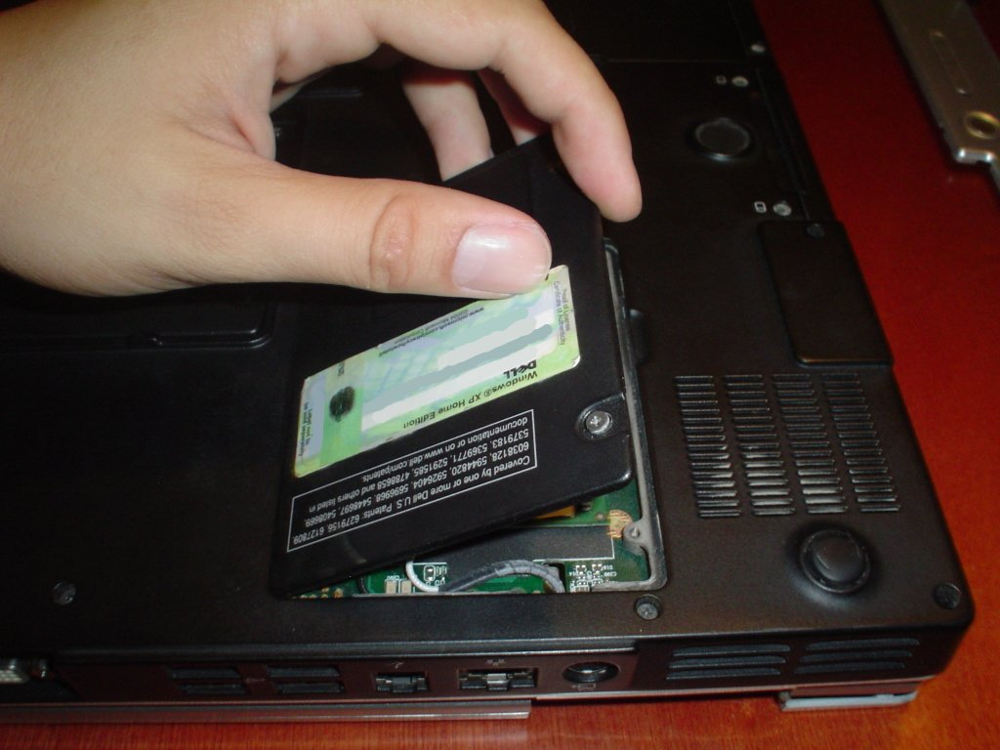
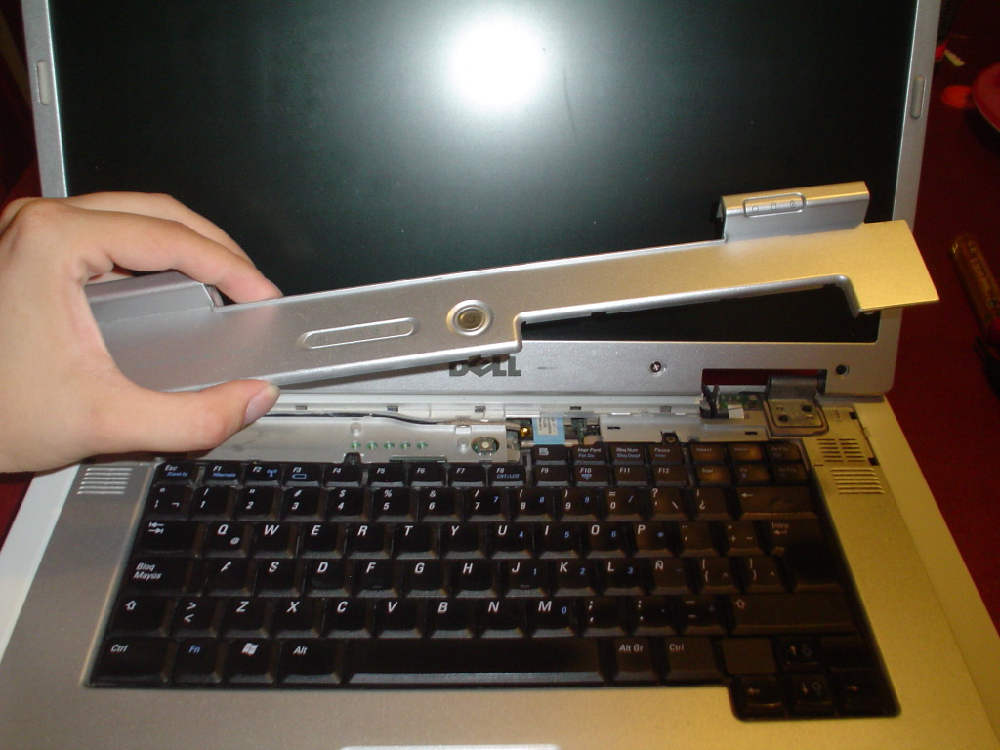

Dell Inspiron 9300 - Reparación de la bisagra
Después de más de tres años de uso, mi portátil, una Dell Inspiron 9300, presentó una falla mecánica: la esquina inferior derecha de la pantalla se abultaba cada vez que trataba de cerrarla o abrirla.
26 July 2009
Después de más de tres años de uso, mi portátil, una Dell Inspiron 9300, presentó una falla mecánica alarmante: la esquina inferior derecha de la pantalla se abultaba cada vez que trataba de cerrarla o abrirla. Parecía que se había soltado algún componente de la bisagra por dentro del equipo.


Con el apoyo del Dell Inspiron 9300 Service Manual seguí el procedimiento para abrir la pantalla. A continuación les mostraré foto por foto la operación...
Abrí la tapa donde está el botón de encendido. Esta tapa se sujeta a presión. Con un desarmador se debe levantar del lado derecho.


Cerré la pantalla. Puse la portátil con su parte inferior hacia arriba. Retiré la tapa del compartimiento de la tarjeta Mini PCI y desconecté los dos cables de la antena WiFi.




Volteé la portátil y abrí la pantalla. Jalé los cables de la antena WiFi para sacarlos.

Desconecté el cable de datos del monitor y lo retiré del canal que lo sostiene.

Desatornillé los cuatro tornillos (dos por cada lado) de las bisagras. Así la pantalla se separa de la computadora.

Despegué las tapas de plástico y la gomitas que ocultan los ocho tornillos que sujetan la cubierta del marco de la pantalla.


Lo más difícil fue separar la cubierta del marco de la pantalla. Además de los ocho tornillos, se sujeta a presión. Empezando por la parte inferior fui desprendiéndola poco a poco.


Aquí quedó expuesta la falla. El único tornillo que sujeta la bisagra derecha con el marco de la pantalla ¡estaba completamente suelto!. Lo que significa que después de más de tres años de uso, el tornillo se fue aflojando poco a poco.

Así pues les dí una buena apretada. Y procedí a volver a armar todo.

Después de colocar la cubierta del marco, los ocho tornillos y atorniñar las bisagras, le dí la vuelta a todo el equipo para reconectar los cables de la antena WiFi.
La tapa superior se ajusta a presión, debe insertarse primero el lado izquierdo y acabar con el lado derecho.


He aquí el resultado final. El mecanismo de las bisagras funciona perfectamente.